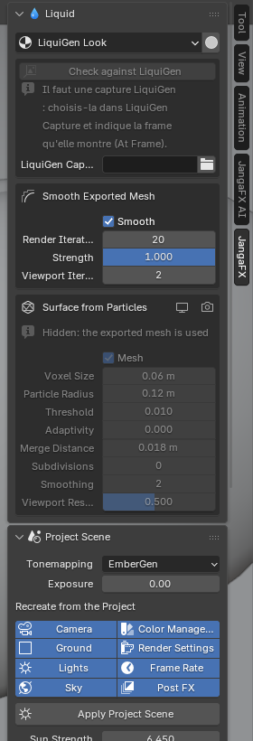

The Liquid section
The Liquid section of the JangaFX panel appears when a LiquiGen project is open. It sets everything about the liquid.


The liquid look
The LiquiGen Look menu chooses the liquid material:
- the LiquiGen project appearance (default): colour, transparency and reflections read from the project;
- or one of your water materials found in your asset libraries: it is added once to the file, with its textures linked.
With a library material, the AI assistant does not change the liquid.
The button to the right of the menu (Detail Preview) sets the 3D viewport to read the liquid details well: Solid mode, glossy matcap, foam in white, more smoothing.
Surface foam
Surface Foam paints foam on the liquid surface. It is off on import: the foam comes from the particles exported by LiquiGen. Once on (in the viewport and in the render), you set:
- its Shader (empty: built-in white foam);
- its amount and shape: Coverage, Threshold, Softness, Lace Scale, Lace Width, Lace Amount, Distortion, Foam Height;
- the froth: Bubble Size, Bubble Variation, Bubble Relief, Translucency, Color.
These values are the add-on's choices: LiquiGen has no equivalent, nothing is read from the project.
The liquid surface
- Smooth Exported Mesh: smoothing of the mesh exported by LiquiGen.
- Surface from Particles: surface rebuilt from the liquid particles. This setting is hidden when the exported mesh is used.
White water particles
One box appears per type of white water particles the project simulates: foam, spray and bubbles. Each has its render button, to show or hide it in the render.
Types the project does not simulate are not imported, even if LiquiGen wrote empty objects for them.
The project scene
The Project Scene section recreates the project's setting: camera, sun, sky and ground. Each setting is described in Project scene.